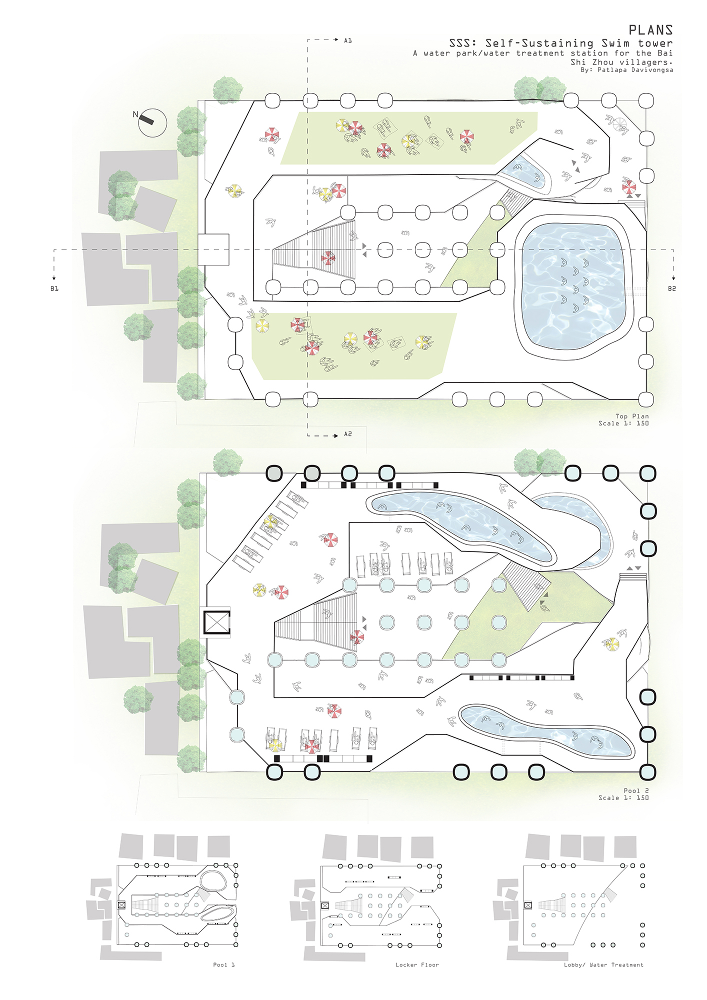
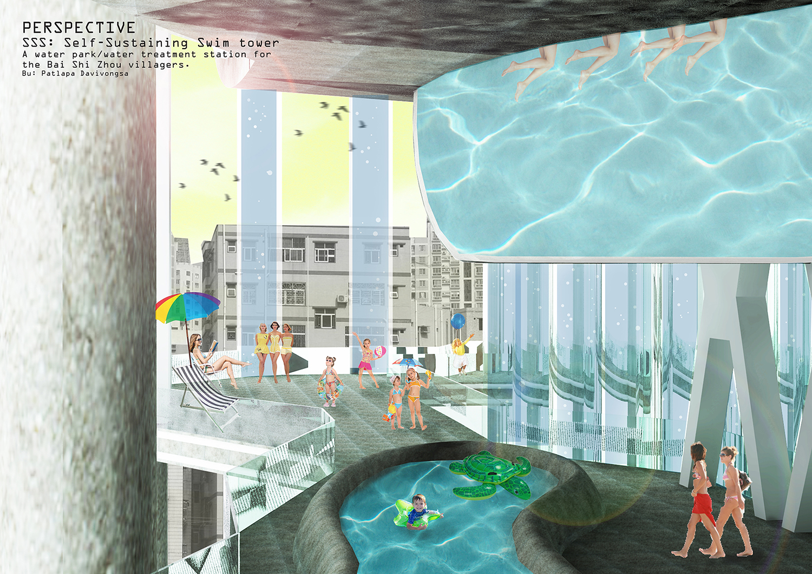

The SSS: Self-Sustaining Swim tower is a water park/water treatment station that maximizes the use of groundwater from the central village well by treating and distributing it to the people in Bai Shi Zhou urban village in Shen zhen. The treated water is also used in the water park tower, with structural tube columns that act as water storage and water distribution.
Studio blog: Architecture of Performance-Patlapa Davivongsa
☻ ☻ ☻


- - - - - - - - - - - - - - - - - - - - - - -